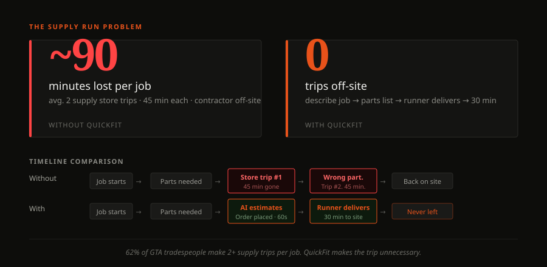
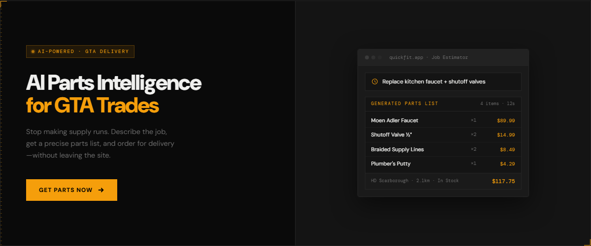
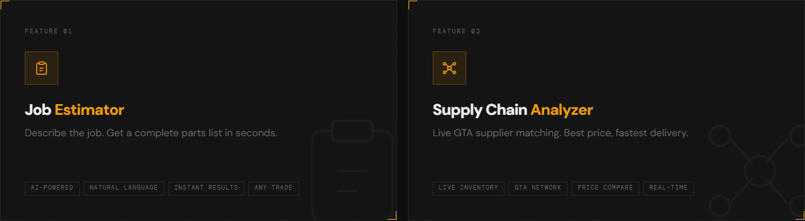
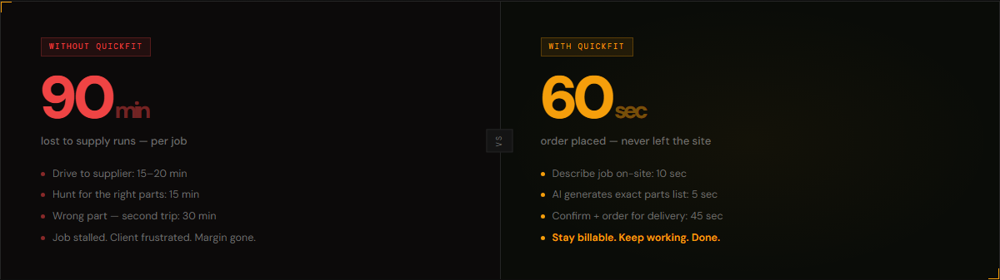
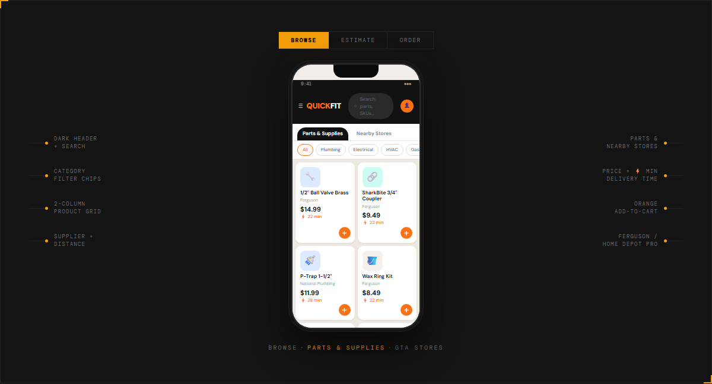

Context
62% of tradespeople make two or more supply store trips per job. Each averages 45 minutes round trip.
That's not a small inefficiency. For a contractor running multiple jobs a week, supply runs are one of the most consistent drains on billable time — and they're almost entirely avoidable. The materials exist, the suppliers are nearby, the problem is coordination: knowing what you need, knowing who has it, and getting it to site without stopping work.
QuickFit is designed around that exact gap. AI handles the intelligence layer — parts estimation and supplier matching. A runner handles the last mile. The contractor stays on site.
The Problem
The supply run problem is really three problems stacked.
First: contractors often don't know the exact parts needed until they're mid-job. Estimating correctly upfront requires experience and time. Second: knowing which local supplier has the right part in stock requires calling around or making a trip to check. Third: physically leaving the job site to pick up materials breaks workflow and adds cost. Each problem compounds the others.
Existing solutions — supplier websites, phone orders, delivery services — address pieces of this. None address the intelligence layer: helping a contractor figure out what they need and where it is before they ever leave the site.

Without QuickFit: ~90 minutes lost per job across two store trips. With QuickFit: parts ordered in under 60 seconds, contractor never leaves the site.
Problem audit: four failure signals in the original site, four answers in the redesign — each mapped to what a contractor needs to decide within 10 seconds.
How It Works
Describe the job. Get the parts list. They arrive in 30 minutes.
The product is built around two AI features powered by the Claude API, and a delivery model designed for the GTA market.
Job Estimator: The contractor describes the task in plain language — "replacing a bathroom vanity, need supply connections and shutoffs" — and the AI returns a complete parts list with quantities, specifications, and estimated costs. No manual lookup, no guessing at SKUs.
Supply Chain Analyzer: The parts list is matched against real-time inventory across GTA suppliers (Home Depot Pro, Wolseley, Emco). The AI flags availability issues, suggests substitutions where stock is low, and identifies which supplier fulfils the order most efficiently.
A runner then picks and delivers to the job site within 30 minutes. The contractor never left.

Job Estimator: describe the task in plain language, get a complete parts list with quantities and estimated costs.

Supply Chain Analyzer: every part matched against live GTA supplier inventory, cheapest available source selected, delivery time estimated.
AI content layer: Claude API generates trade-specific product copy on demand — client describes a product in plain language, gets publish-ready content in seconds.
The Build
A landing page that explains the product. A prototype that demonstrates it.
Two deliverables: a live marketing site and an interactive app prototype. The landing page is built to convert a contractor who lands cold — it leads with the time problem, walks through the three-step workflow, and positions the AI features as the differentiator. The prototype demonstrates the product experience end-to-end: browse, estimate, order.
The infrastructure runs on free tiers (Netlify, Make.com, Brevo) with Claude API as the only variable cost. The business model is commission per delivery at 15% — no subscription, no barrier to first use.

Landing page built around the contractor scan — trust, product depth, and a single conversion path, all before the second scroll.
Conversion path architecture: every layout decision evaluated against three questions a contractor asks in the first scroll.
Design System
Dark industrial palette. Amber accent. Precision over personality.
The brand system is built to feel like the tool it is — not like a startup. Deep charcoal background, amber for every signal that matters, DM Sans for readability under site conditions. The assets below are the full design package: hero, stats, feature cards, workflow comparison, and app mockup.

Portfolio thumbnail / hero — dark split layout, app UI mockup on right showing live parts list output.
Stat callout — 62% lead, with secondary breakdown of average run time, frequency, and daily revenue lost.

Feature cards — Job Estimator (natural language → parts list) and Supply Chain Analyzer (live GTA supplier matching).

Before / after — 90 minutes lost per job vs. order placed in 60 seconds without leaving the site.

Mobile app mockup — mirroring the live app's dark header, Parts & Supplies tabs, category chips, 2-column product grid with ⚡ delivery times and orange add-to-cart.
The Process
Design decisions, technical constraints, and what didn't make it.
The Job Estimator prompt is engineered to be trade-specific — it knows not to return consumer hardware store alternatives when a contractor needs commercial-grade fittings. That required iteration: early versions returned overly generic lists that wouldn't fly on an actual job site. The final prompts include trade context, unit quantities, and cost estimation as structured outputs rather than prose, so the UI can parse and sort them reliably.
The Supply Chain Analyzer faced a harder constraint: real-time supplier inventory data isn't publicly accessible. In the current prototype it uses representative supplier data to demonstrate the UX. Connecting to live APIs (Home Depot Pro, Wolseley) is the gap between proof of concept and actual product — it requires supplier partnership agreements that don't yet exist.
The business model is designed to require almost no upfront cost. Netlify handles hosting, Make.com handles automation (order notifications, runner dispatch), Brevo handles transactional email. Claude API is the only meaningful variable cost. At 15% commission on a $100 delivery, the unit economics work from day one — the question is volume, not margin.
What didn't make it: an in-app runner tracking view and a contractor order history dashboard were scoped but deprioritized. Neither is necessary to validate the core hypothesis. They'd both be straightforward additions once the supplier data layer is real.
Outcome
A functioning proof of concept with a real business model behind it.
The landing page is live. The prototype demonstrates the full product experience. The AI layers are functional — the Job Estimator and Supply Chain Analyzer are working integrations, not mock-ups.
Reflection
The AI intelligence layer is genuinely useful and the problem is real. What's unproven is the operational side — specifically the runner network. A 30-minute delivery promise requires reliable last-mile execution that a prototype can't validate. The GTM strategy (3 GTA postal codes, 5 partner suppliers, 200 contractors via trade groups) is plausible but the actual constraint is supplier API access. Without real inventory data, the Supply Chain Analyzer is making educated guesses. That's the next thing to solve.